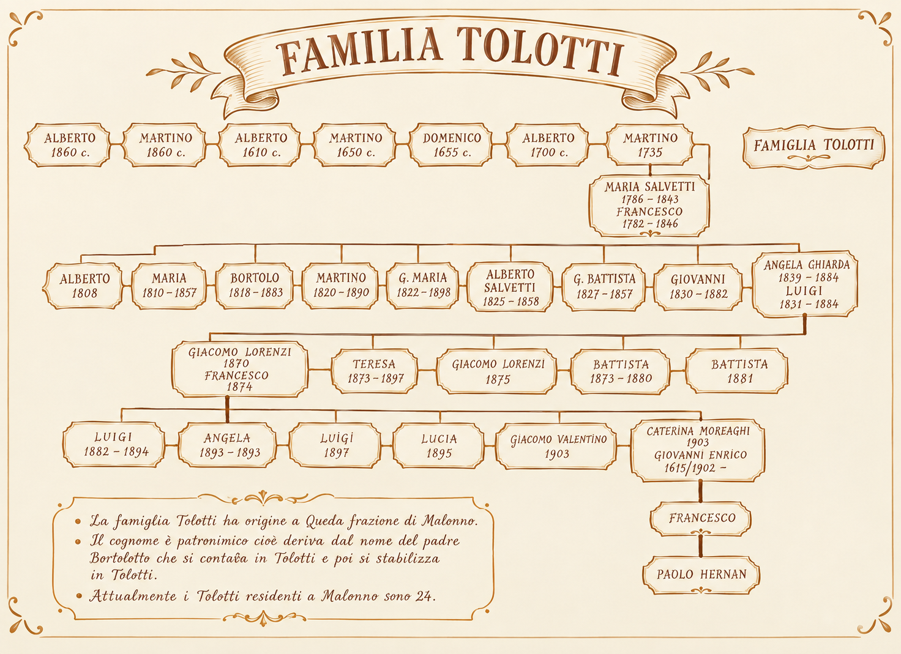
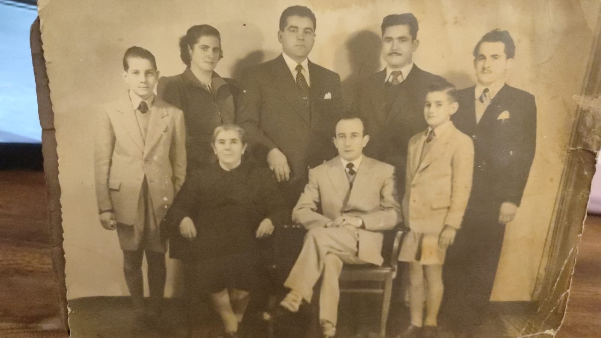
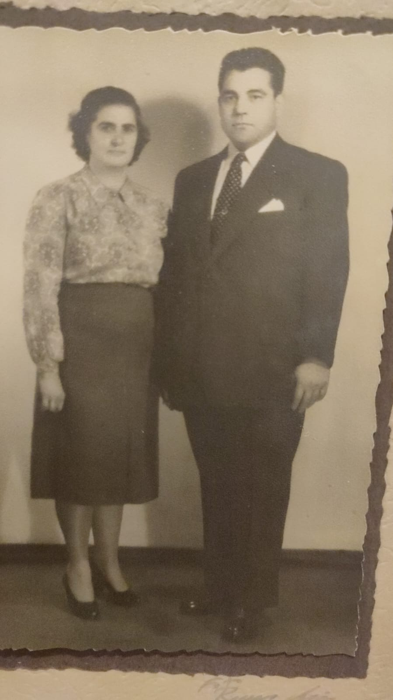
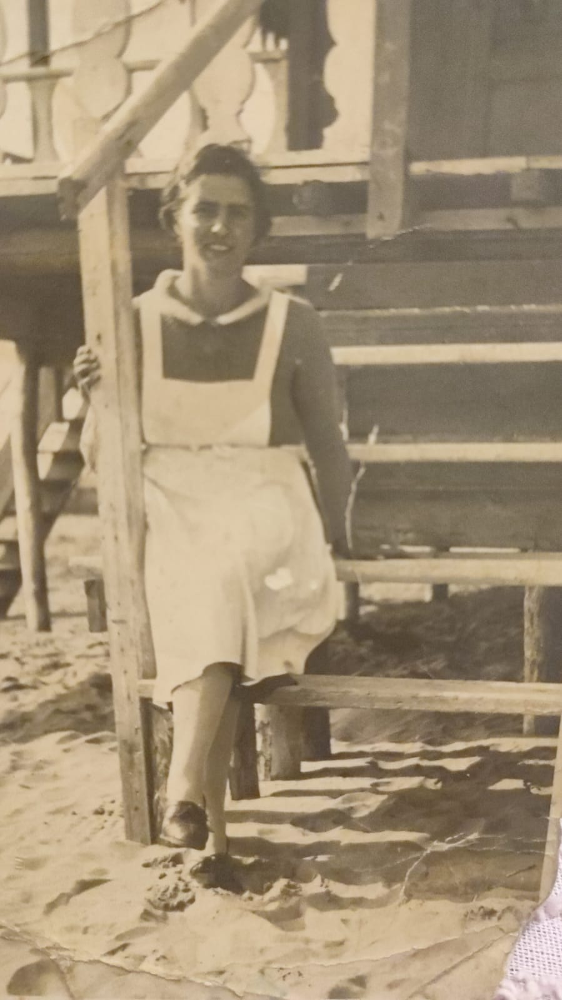
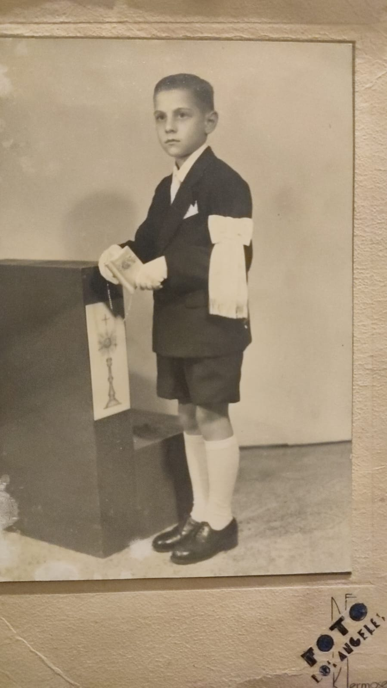
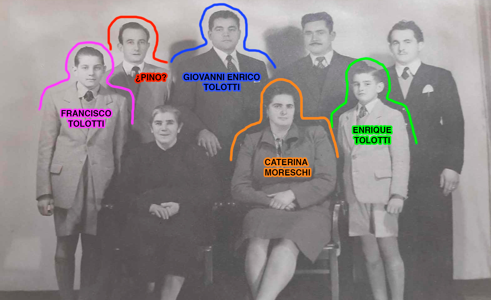
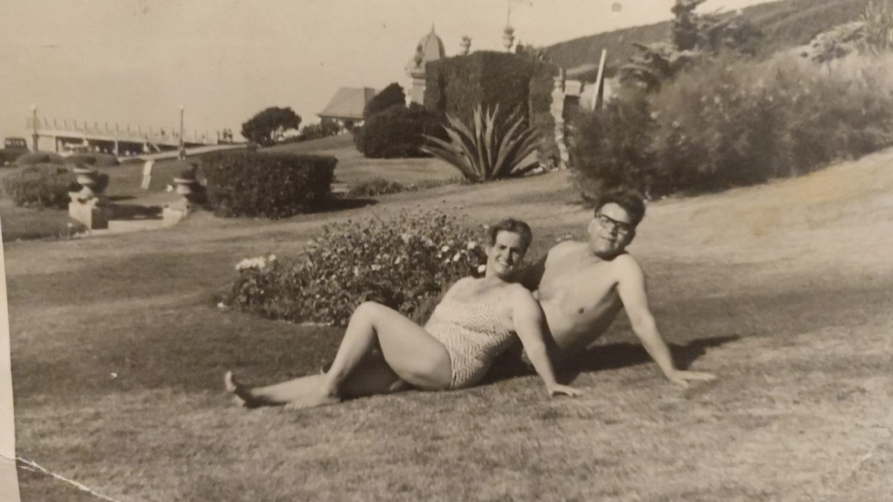
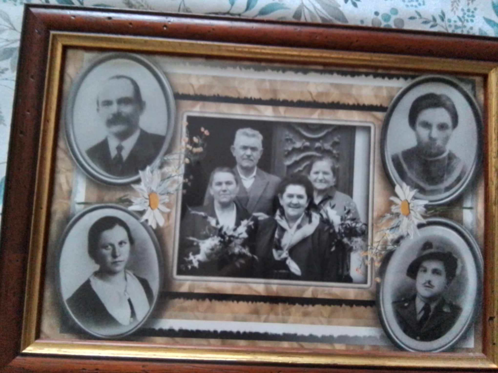
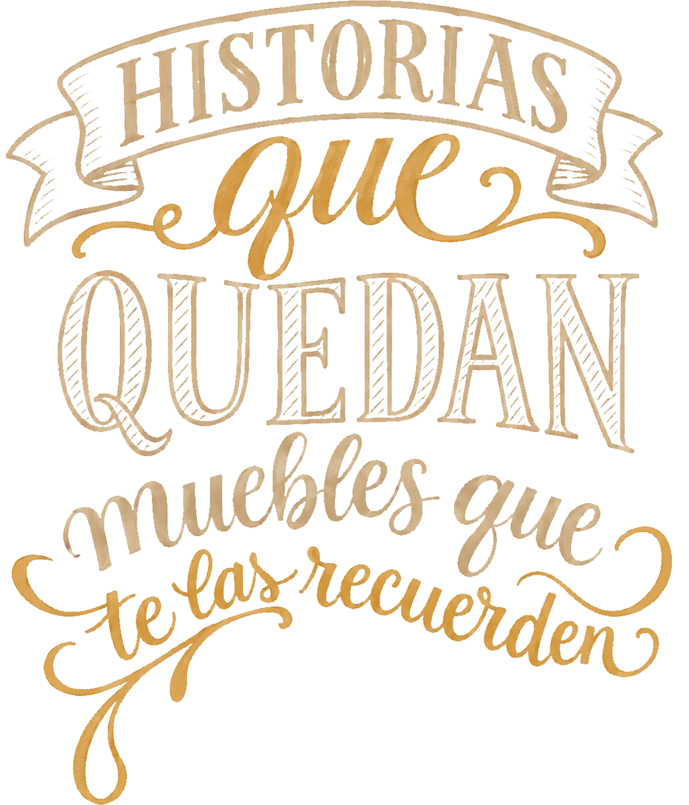

Maestro ebanista


Oficial ebanista
Tradicióny madera real
Nuestro linaje :
Árbol genealógico


Origen: Malonno
Provincia de Brescia, Italia
El viejo conventillo
Dicen que, mucho antes de que fuera un taller, aquella casa había sido un conventillo de italianos. Habitaciones pequeñas, puertas que daban a un mismo patio y familias que se cruzaban a diario entre ropa tendida, ollas al fuego y conversaciones en italiano. Era una casa ruidosa, trabajadora y llena de vida.
Con los años, las familias fueron dejando el lugar y la casa cambió de manos. Pero algo de aquel espíritu quedó. Donde antes se compartían comidas y se arreglaban las cosas entre vecinos, empezó a funcionar un pequeño taller de carpintería y ebanistería. La madera comenzó a reemplazar al murmullo del patio: serruchos, martillos, viruta y ese olor inconfundible de la madera recién cortada. El taller fue creciendo de a poco, pero siguió siendo, ante todo, una casa familiar. Un lugar donde se trabajaba, se aprendía y se pasaban los días. Y fue ahí, entre maderas, herramientas y movimiento, donde nació la primera mascota de la familia; Kitry.
Kitry, una perrita sin raza pero con rasgos siberianos, llegó al mundo junto a su hermana Lala, en su momento una cachorrita rubia, y sin saberlo, se convirtió en una parte inseparable de la historia de los Tolotti. Durante muchísimos años acompañó a la familia: estuvo en el taller, en la casa, en los días de trabajo y en los momentos más simples. Creció al mismo tiempo que crecían las personas, los proyectos y la familia. Por eso, cuando se recuerda aquel lugar, no se recuerda solamente como un antiguo conventillo convertido en carpintería. Se recuerda como una casa que fue cambiando con quienes la habitaron y que, entre madera, herramientas y perros corriendo por ahí, terminó convirtiéndose en parte de la historia de los Tolotti.
Y quizá sea esa la verdadera historia del taller: que antes de ser un lugar donde se hacían muebles, fue un lugar donde se hizo familia.








